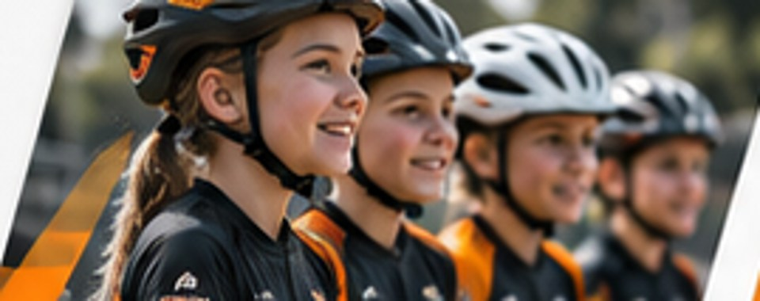

MEHR ALS TRAINING.
Lokale Inline-Skating-Wettbewerbe, gemeinsames Feiern und Anerkennung für jeden Fortschritt.
DER ERSTE INLINE CUP.
2026 fand der erste Golden Fox Inline Cup statt. Neun Kinder nahmen an dem Event teil. Es war unser erster Schritt hin zu einer eigenen Golden Fox Event-Kultur.
Für kommende Veranstaltungen möchten wir Abläufe, Sicherheit, Wetteralternativen, Helferplanung und Auszeichnungen weiterentwickeln.
INTERESSE AN EVENTS MELDEN ↗
POKALE. MEDAILLEN. MOMENTE.
GOLDEN FOX CUPS
Regionale Wettkämpfe, die Kinder motivieren und die lokale Inline-Skating-Community verbinden. Weitere Termine sind in Planung.
MEDAILLEN & POKALE
Anerkennung sportlicher Leistung, persönlicher Entwicklung und fairen Verhaltens.
URKUNDEN
Persönliche Zertifikate und Erinnerungen, die Fortschritte sichtbar machen.
DU MÖCHTEST DABEI SEIN?
Wir sammeln unverbindliche Interessensbekundungen für zukünftige Events.
UNVERBINDLICH ANFRAGEN ↗